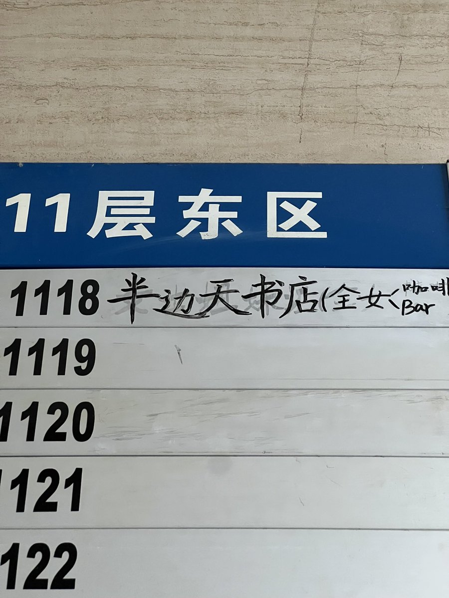
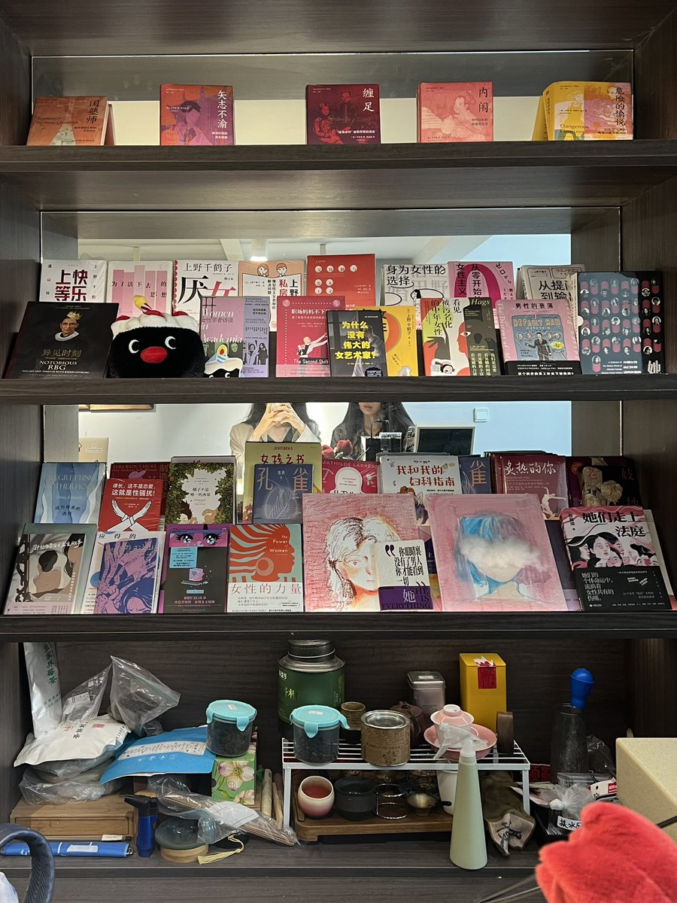
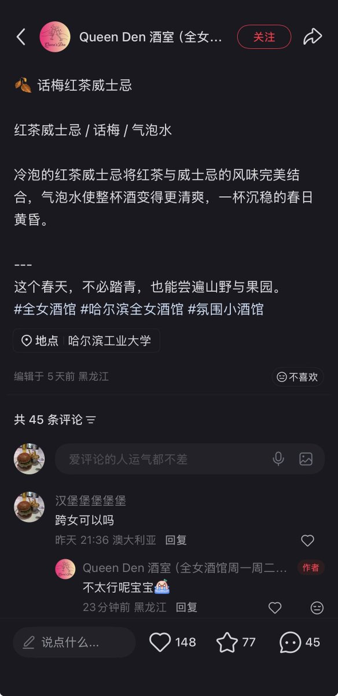

amber
@amber_medusozoa
国内的情况有的时候很暧昧，就是只要你不明着问对方压根不会管，就算看出来了也不敢问你。去年我和那由去了这家全女社群空间，对方应该能看出来我不太对劲但是一直没敢问，我们呆了一下午，加了老板微信并明确告知了老板我们的身份。后面有个朋友去联系她们问跨女能不能去，得到的回答反而是不能（



🍔
@Yagi_Yui_Yo
非挂人/避雷贴
联系到前一阵的lo店试穿舆情
一是很困惑怎么现在国内对trans的不友好会到这种地步 二元性别的对立会到这种地步
二是如果我是在国内生活的non-binary/trans我该如何自处
三是扭转这种全面转向保守的现状有什么先决条件 需要我们做什么
可以来讨论 抱怨 骂人 但不要去原平台骚扰商家 https://t.co/toWdHG3BuH